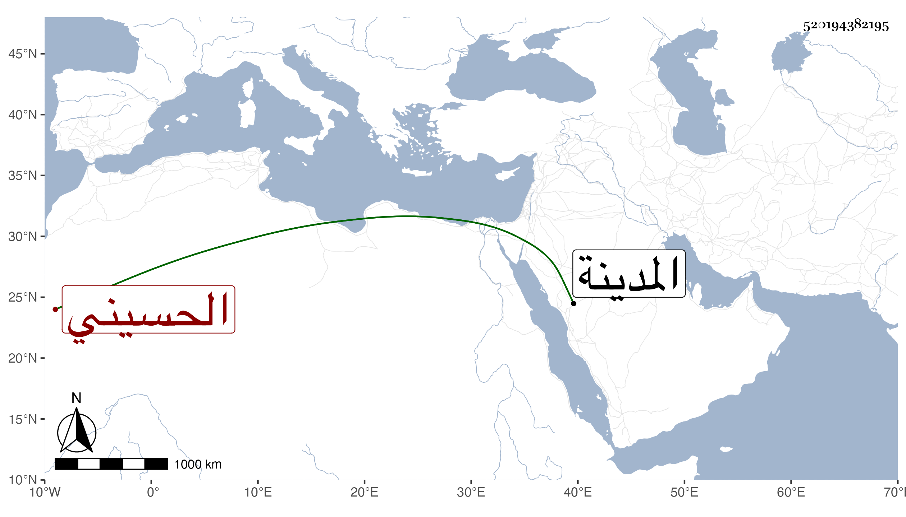

0902Sakhawi.DawLamic.ITO20230111-ara1.EIS1600.520194382195
Biography ID: 520194382195
648
حيدرة بن دوغان بن جعفر بن هبة بن جماز بن منصور الحسيني . ناب في إمرة المدينة بعيد الأربعين وثمانمائة عن أميرها سليمان بن عزيز ثم استقل باجماع أهل المدينة إلى أن جاءه المرسوم بعد نحو شهرين ، وقد مات فإنه أصيب في معركة فتعلل نحو شهرين ثم مات في جمادى الآخرة ، ورأيت ابن فهد قال في ثاني رمضان سنة ست وأربعين .
